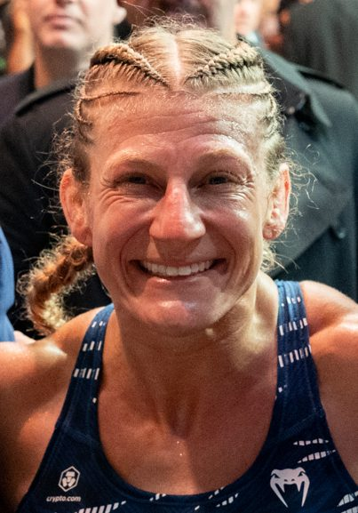

UFC 334: Ган нанёс Хокиту первое поражение, Харрисон заставила сдаться Нуньес
Оба чемпиона сохранили титулы в «Мэдисон Сквер Гарден»: Сирил Ган — с тремя судейскими записками 48:47, Кайла Харрисон — удушающим приёмом сзади в четвёртом раунде.

Что произошло
Сирил Ган и Кайла Харрисон сохранили чемпионские пояса на турнире UFC 334, который прошёл в субботу, 14 ноября 2026 года, в «Мэдисон Сквер Гарден» в Нью-Йорке.
В главном бою чемпион в тяжёлом весе Ган победил Джоша Хокита единогласным решением судей после пяти раундов. Все трое судей выставили 48:47. Для Гана это первая защита титула, для Хокита — первое поражение в профессиональной карьере.

Во втором главном бою Харрисон победила Аманду Нуньес удушающим приёмом сзади на отметке 1:29 четвёртого раунда и осталась чемпионкой в легчайшем весе.
Как прошли бои
Хокит с первых секунд шёл вперёд и пытался перевести бой в партер, но Ган останавливал многие проходы, пишет Heavy. Француз отвечал джебами, коленями по корпусу и хай-киком, который соперник заблокировал. В пятом раунде Хокит устал и стал давить меньше. Три записки 48:47 означают, что каждый судья отдал Гану три раунда, а Хокиту — два.
28-летний Хокит, бывший игрок НФЛ, подошёл к бою с рекордом 10-0. По данным Yahoo Sports, он дебютировал в UFC в конце 2025 года и выиграл в организации четыре боя, в том числе у Кёртиса Блейдса и Деррика Льюиса.

Нуньес, бывшая чемпионка в двух весовых категориях и член Зала славы UFC, возвращалась после перерыва. Она решила бороться с Харрисон, и та завершила бой после единственной ошибки соперницы, сообщает Khel Now.
Главные факты и цифры
- Титул в тяжёлом весе: Сирил Ган победил Джоша Хокита единогласным решением (48:47, 48:47, 48:47).
- Титул в женском легчайшем весе: Кайла Харрисон победила Аманду Нуньес удушающим приёмом сзади, 4-й раунд, 1:29.
- Рекорды до турнира: Ган — 14-2, Хокит — 10-0, Харрисон — 19-1, Нуньес — 23-5.
- Основной кард: Кайо Борральо победил Юсри Белгаруи единогласным решением; Урош Медич и Кевин Холланд завершили бой вничью решением большинства; Луис Гуруле победил Билала Хасана раздельным решением.
- Прощальный бой: Стивен Томпсон выиграл последний бой в карьере в предварительном карде, остановив Чарльза Радтке ударом ногой с разворота.